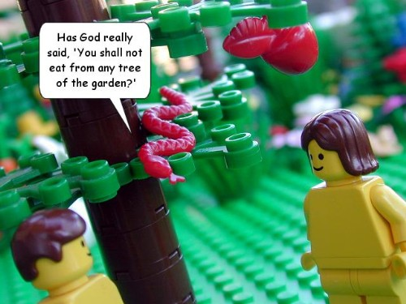

I grew up without religion — the subject just never really came up. Which left me pretty confused when I was sent to a heavily Christian daycare, but that’s another story for another day (the short version: I just couldn’t figure out why every day they told us the same fairy tale, and it wasn’t even a very good one). Over time I was exposed here & there to bits & pieces of the Bible, but it was all a muddled mystery to me, and sitting down to try to read it one day got me nowhere — I think I got lost in a sea of “begat”s. My interest in the Bible wasn’t religious — I was just tired of getting stuck on Biblical crossword puzzle hints.
Then, one day a few years ago, Hanford pointed me to a new version of the Bible: The Brick Testament.

The Brick Testament, by the Rev. Brendan Powell Smith
The Reverend Brendan Powell Smith (who is a reverend like my imaginary cat is the pope) is creating the whole Bible by using only Legos. This speaks to me on several levels: 1) It’s Legos. So I’m in. 2) It’s a pretty straightforward telling of the stories, and tries to be as true to the Bible as one can be when using little plastic yellow robot-men. 3) It’s not trying to sell me a way of life, it’s just trying to translate a book. Amen.
It was a Rosetta stone for me — finally, I was able to learn the backstories that went with the characters I was only vaguely able to identify before. Kind of like getting a CliffsNotes version of the Marvel universe. Only more socially relevant, I guess. It was much appreciated.
The funny thing is, right during that time when I was using the Brick Testament to get up to speed with the Bible, Hanford & I were at a local drugstore, and we saw a young couple checking out children’s illustrated Bible story books. Hanford thought that one of them was the Right Reverend Smith — we found out later that it was. Hanford still kicks himself for not going up to chat with him.
A post on the super-nifty blog Neato Coolville got to one of my weak spots: The Banana Splits. And it reminded me of some other rare collectible Banana Splits stuff I had seen.
Here’s Neato Coolville’s Window Clings of Fleegle and Bingo:
And here’s something really wild that I’ve never seen before. The Banana Splits done up as the band KISS. I have no idea who made it or where it came from. This was on an ebay auction that another (at-the-moment-defunct) blog found.
Unless you’re playing Half-Life 2 24 hours a day, 7 days a week, your computer has times when it’s sitting partially or totally unused. That’s a shame, because there are some really worthwhile projects that could use some extra computing power. For years, there have been distributed computing projects that let you donate your unused computer time to various causes: SETI@Home was the real pioneer, and I ran that for some time, but in recent years, I’ve run software for protein folding.
Protein folding on the PS3
Now comes another really cool advance in distributed computing: the use of video game consoles! The latest generation of video game consoles couple some pretty impressive computing power with an internet connection… that makes it a perfect resource to tap into. Stanford’s Folding@Home project has announced a client for the new Sony PlayStation 3. Since the PS3 has such great graphics capabilities, that means you can also watch Folding@Home in action in real time, and can see the 3D dimensions of the protein being folded. [via Kotaku]
After the jump, I’ll offer up my grossly oversimplified explanation of why protein folding is so important. Read on, if you’d like to know more…
The Waffle Whiffer wishes everyone a Happy St. Patrick’s Day with this nifty Uncle O’Grimacey plastic bag puppet. As a kid I was told never to play with plastic bags … but puppets were AOK! Thanks Waffle Whiffer! Happy St. Patrick’s day everybody!
No celebration of cheesy Irishness is complete without Lucky the Leprechaun:
The first Lucky Charms commercial
This is the very first commercial for Lucky Charms. This was done by Bill Melendez — before he started his own studio to produce the Peanuts specials, he did a lot of work on animated commercials. This commercial is from about 1964.
Kites are fun!
I love this one because it reminds me of Kites Are Fun, by the Free Design: